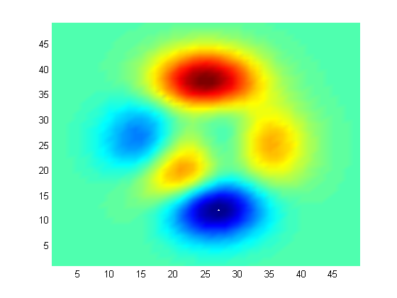
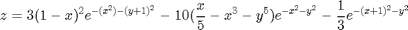
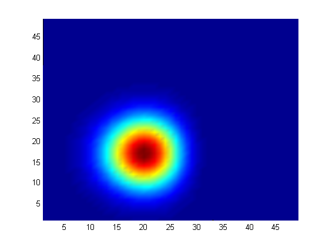
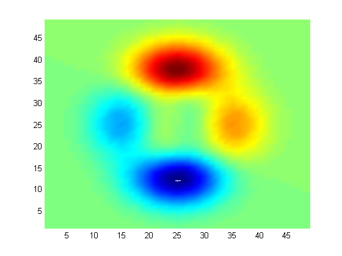
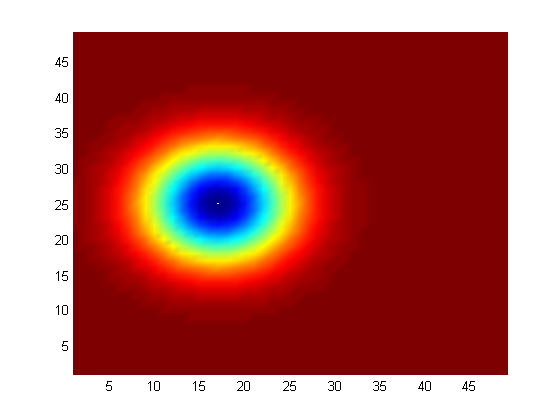

DEMONSTRATE HOW TO MARKUP CODE TO PUBLISH TO A WEBPAGE
Recipe: 3165_08_04: Publish Demo Copyright 2012 Packt Publishing Revision: 1 Date: 2012-07-16 24:00:00
Contents
Declare Code Cells
The double percent signs (%%) indicates the start of a new code cell.
Add a Heading
Make a cell with no code to add a heading.
Create a Contents Section
A Contents section is automatically generated cross referncing each section heading.
Add Sections
Cell Names Become Section Headings
Add Body Text
A single percent sign denotes a comment line which is turned into body text.
Add Code and Results
figure; [x y z] = peaks; surf(z);view(2);shading interp; set(gcf,'Color',[1 1 1]);axis tight;
Add source Equation in LaTeX format
Enclose LaTeX expression using $ symbols:

disp(''); % $$z = 3(1-x)^2e^{-(x^2) - (y+1)^2} - 10(\frac{x}{5} - x^3 - y^5)e^{-x^2-y^2} - \frac{1}{3}e^{-(x+1)^2 - y^2}$
Add Basic Text Formatting
Enclose text using the:
- underscore sign makes it appear in italics
- asterix sign makes it appear in bold
- pipe sign makes it appear in mono face
Add Code and Results from Inside a Loop
zN{1} = 3*(1-x).^2.*exp(-(x.^2) - (y+1).^2);
zN{2} = - 10*(x/5 - x.^3 - y.^5).*exp(-x.^2-y.^2);
zN{3} = - 1/3*exp(-(x+1).^2 - y.^2);
for i = 1:3
figure;
surf(zN{i});view(2);shading interp;
set(gcf,'Color',[1 1 1]);axis tight;
   end
Fresh Start
close all;clear;clc